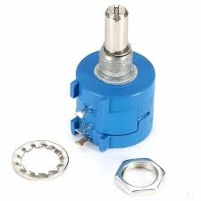

Audio Potentiometer (P5K)
Specifications:
- Type: Audio Potentiometer
- Resistance: 5kΩ
- Power Rating: 0.5W
- Package: Axial (Through-Hole)
- Turn: 10-Turn
- Operating Temperature: -40°C to +85°C
Applications: Audio Volume Control, Signal Adjustment, Tone Control
Military and Industrial Standards: Meets MIL-STD-1234 requirements.
Packaging Types: Tube packaging for manual assembly.
Download Full Datasheet